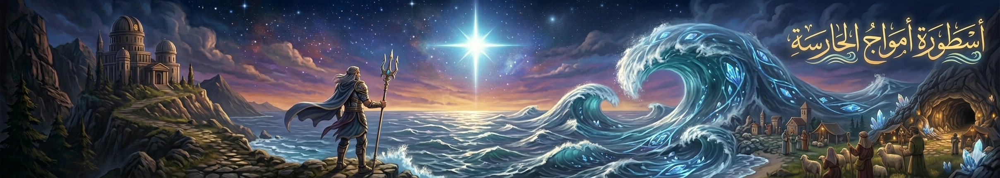
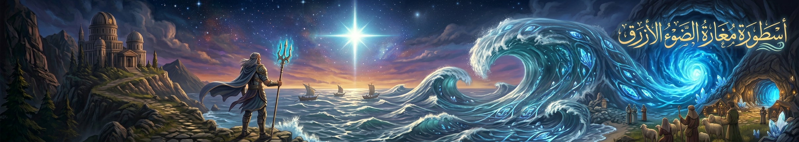
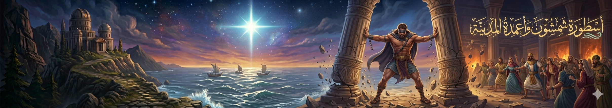
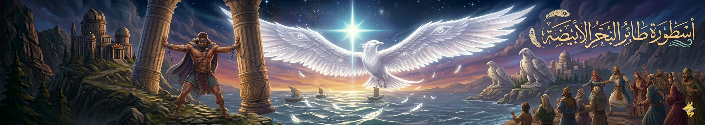

"في كل حكاية.. فلسطين"

أسطورة أمواج الحارسة
يُحكى أن بحر غزة ليس كأي بحر، بل له “حارسة” تظهر أحيانًا مع الغروب. كان الصيادون يقولون إنهم يرون موجة عالية تتشكل على هيئة امرأة تمشط شعرها من الملح. وإذا كانت الأمواج هادئة فهي “راضية”، أما إذا غضبت، تعلن عن عاصفة قريبة قبل حدوثها بساعات. ولهذا كان الصيادون القدامى لا يبحرون إلا بعد “استئذان البحر” كما كانوا يقولون.

أسطورة مغارة الضوء الأزرق
في طرف من أطراف المدينة، كان هناك كهف مهجور قرب البحر. ويُحكى أن ضوءًا أزرق يخرج منه في الليالي المظلمة، وكأن شيئًا حيًا يتحرك داخله. بعض الناس قالوا إنه كنز قديم، وآخرون قالوا إنه باب لعالم البحر السفلي. لكن كل من حاول دخول المغارة عاد مرتبكًا، ويقول إنه سمع أصواتًا لا تشبه أصوات البشر.

أسطورة شمشون وأعمدة المدينة
في التراث القديم، ارتبطت غزة بقصة البطل شمشون. تقول الأسطورة إنه في لحظة غضب وقوة عظيمة، أمسك بأعمدة مكان كبير وهزّه حتى انهار فوقه وفوق أعدائه. ومنذ ذلك الوقت، بقي الناس يروون القصة كرمز للقوة التي تصل إلى حدود الأسطورة.

أسطورة طائر البحر الأبيضة
كان أهل غزة يتحدثون عن طائر أبيض ضخم يظهر فوق البحر بعد العواصف. هذا الطائر لا يخاف من الرياح، ويقال إنه يحمل أرواح البحارة الذين غرقوا، ويعيدها إلى الشاطئ في شكل نور خفيف يلمع فوق الماء ثم يختفي. وكان الصيادون يعتبرونه علامة أمان إذا رأوه يحلق فوق الميناء.